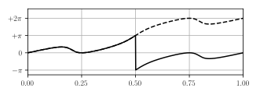

Let \(\Omega\) be an open star-shaped subset of \(\mathbb{C}\) with a center \(c\).
For any \(z \in \mathbb{C} \setminus \Omega\) and any \(s\geq 0\), the point \(w = z + s (z - c)\) belongs to \(\mathbb{C} \setminus \Omega.\) The ray of all such points \(w\) is unbounded and connected, thus it is included in an unbounded component of \(\mathbb{C} \setminus \Omega\). All components of \(\mathbb{C} \setminus \Omega\) are therefore unbounded: \(\Omega\) is simply connected.
Alternatively, let \(\gamma\) be a closed path of \(\Omega\) and let \(z = c + r e^{i\alpha} \in \mathbb{C} \setminus \Omega\). Since the ray \(\{z + s e^{i\alpha} \; | \; s \geq 0\}\) does not intersect \(\Omega\), for any \(t \in [0,1]\) and any \(s\geq 0\), \(\gamma(t) - z \neq s e^{i\alpha}\). Thus \(e^{-i(\pi + \alpha)}(\gamma(t) - z) \in \mathbb{C} \setminus \mathbb{R}_-\) and the function \[
\phi: t \in [0,1]
\mapsto
e^{i(\pi+\alpha)}\arg (e^{-i(\pi+\alpha)}(\gamma(t) - z))
\] is defined; since it is a continuous choice of the argument \(w \mapsto \mathrm{Arg} (w - z)\) along \(\gamma\), \[
\mathrm{ind}(\gamma, z) = \frac{1}{2\pi}[\phi(1) - \phi(0)] = 0.
\] Therefore, \(\Omega\) is simply connected.
Let \(p\) be the polynomial \[
p(z) = \lambda \times (z - a_1)^{n_1} \times \dots \times (z-a_m)^{n_m}
\] where \(\lambda\) is a nonzero complex number, \(a_1, \dots, a_m\) are distinct complex numbers (the zeros or roots of the polynomial) and \(n_1, \dots, n_{m}\) are positive natural numbers (the roots orders or multiplicities). Let \(\gamma\) be a closed path whose image contains no root of \(p\): \[
\forall \, t \in [0,1], \;
p(\gamma(t)) \neq 0.
\] The argument principle then states that \[
\mathrm{ind}(p \circ \gamma, 0)
=
\sum_{k=1}^m \mathrm{ind}(\gamma, a_{k}) \times n_{k}.
\]
Application: Finding the Roots of a Polynomial.
Use the figures below to determine – according to the argument principle – the number of roots \(z\) of the polynomial \(p(z) = z^3 + z + 1\) in the open unit disk centered on the origin.
Graph of \(t \in [0,1] \mapsto \mathrm{arg} \left[ (e^{i2\pi t})^3 + (e^{i2\pi t}) + 1 \right]\); this function has a jump of \(-2 \pi\) at \(t=0.5\) (where it is undefined). The dashed line represents a continuous choice of the argument of \(t \in [0,1] \mapsto (e^{i2\pi t})^3 + (e^{i2\pi t}) + 1\).Graph of \(t \in [0,1] \mapsto |(e^{i2\pi t})^3 + (e^{i2\pi t}) + 1|\).
Argument Principle Proof (Elementary). For any \(k \in \{1, \dots, m\}\), we denote \(\theta_{k}\) a continous choice of \(z \mapsto \mathrm{Arg}(z-a_{k})\) on \(\gamma\). Use the functions \(\theta_{k}\) to build a continuous choice of \(z \mapsto \mathrm{Arg} \, z\) on \(p \circ \gamma\); then, prove the argument principle.
Argument Principle Proof (Complex Analysis). Assume that \(\gamma\) is rectifiable; write the winding number \(\mathrm{ind}(p \circ \gamma, 0)\) as a line integral, then find another way to prove the argument principle in this context.
Let \(\gamma: t \in [0,1] \mapsto e^{i2\pi t}\); we have \((p \circ \gamma)(t) = (e^{i2\pi t})^3 + (e^{i2\pi t}) + 1\). The second figure shows that the graph of \(t \mapsto |(p\circ \gamma)(t)|\) does not vanish on \([0,1]\), hence the image of \(\gamma\) contains no root of \(p\). The second figure shows that the variation of the argument of \(z\) on the path \(p \circ \gamma\) is \(2\pi\) (a variation of \(\pi\) between \(t=0\) and \(t=0.5\) and also a variation of \(\pi\) between \(t=0.5\) and \(t=1.0\)). Accordingly, we have \[\mathrm{ind}(p \circ \gamma, 0) = 1.\]
On the other hand, every zero \(z\) of \(p\) such that \(|z|<1\) satisfies \(\mathrm{ind}(\gamma, z) = 1\) and every zero \(z\) of \(p\) such that \(|z|>1\) satisfies \(\mathrm{ind}(\gamma, z) = 0\). Consequently, the expression \[
\sum_{k=1}^m \mathrm{ind}(\gamma, a_{k}) \times n_{k}
\] provides the number of roots of \(p\) – counted with their multiplicity – within the unit circle. By the argument principle, there is a unique root of \(p\) within the unit circle.
If \(\theta_0\) is an argument of \(\lambda\), the sum \[
\theta: t \in [0,1] \mapsto \theta_0 + n_1 \theta_1(t) \times \dots + n_m \theta_{m}(t)
\] is continuous and \[
\begin{split}
e^{i\theta(t)} = &\, e^{i\theta_0} \times e^{i n_1\theta_1(t)} \times
\dots \times e^{i n_m \theta_m(t)} \\
= &\,
\frac{\lambda}{|\lambda|} \times \frac{(\gamma(t) - a_1)^{n_1}}{|\gamma(t) - a_1|^{n_1}} \times \dots \times \frac{(\gamma(t) - a_m)^{n_m}}{|\gamma(t) - a_m|^{n_m}} \\
= &\,
\frac{(p \circ \gamma)(t)}{|(p \circ \gamma)(t)|},
\end{split}
\] therefore \(\theta\) is a choice of the argument of \(z \mapsto z\) on \(p \circ \gamma\). Consequently, \[
\begin{split}
[z \mapsto \mathrm{Arg} \, z]_{p \circ \gamma}
&= \,
\theta(1) - \theta(0) \\
&= \,
\theta_0 - \theta_0 + \sum_{k=1}^m n_{k}(\theta_{k}(1) - \theta_{k}(0)) \\
&= \,
\sum_{k=1}^{m} n_{k} \times [z \mapsto \mathrm{Arg} (z-a_{k})]_{\gamma}.
\end{split}
\] A division of both sides of this equation by \(2\pi\) concludes the proof.
The integral expression of the winding number is \[
\mathrm{ind}(p \circ \gamma, 0)
=
\frac{1}{i2\pi} \int_{p \circ \gamma} \frac{dz}{z}.
\] The polynomial \(p\) is holomorphic on \(\mathbb{C}\), hence we can perform the change of variable \(z = p(w)\), which yields \[
\mathrm{ind}(p \circ \gamma, 0)
=
\frac{1}{i2\pi} \int_{\gamma} \frac{p'(w)}{p(w)} dw.
\] If we factor \(p(w)\) as \((w-a_{k})^{n_{k}} q(w)\), we see that \[
\frac{p'(w)}{p(w)} = \frac{n_{k}}{w-a_{k}} + \frac{q'(w)}{q(w)};
\] applying this process repeatedly for every \(k \in \{1,\dots,m\}\), until \(q\) is a constant, provides \[
\frac{p'(w)}{p(w)} = \sum_{k=1}^m \frac{n_{k}}{w-a_{k}}
\] and consequently \[
\begin{split}
\mathrm{ind}(p \circ \gamma, 0)
= &\,
\frac{1}{i2\pi}\int_{\gamma} \left[ \sum_{k=1}^m \frac{n_{k}}{w-a_{k}}\right] dw \\
= &\,
\sum_{k=1}^m \left[\frac{1}{i2\pi}\int_{\gamma} \frac{dw}{w-a_{k}}\right] \times n_{k} \\
= &\, \sum_{k=1}^m \mathrm{ind}(\gamma, a_{k}) \times n_{k}.
\end{split}
\]
Intersection. The statement holds true. Indeed, let \(\gamma\) be a closed path of \(A \cap B\); it is a path of \(A\) and a path of \(B\). As both sets are simply connected, the interior of \(\gamma\) is included in \(A\) and in \(B\), that is in \(A \cap B\): this intersection is simply connected.
Alternatively, let \(C\) be a component of \[
\mathbb{C} \setminus (A \cap B)
= (\mathbb{C} \setminus A) \cup (\mathbb{C} \setminus B),
\] and let \(z \in C;\) we have \(z \in \mathbb{C} \setminus A\) or \(z \in \mathbb{C} \setminus B\). If \(z \in \mathbb{C} \setminus A\), the component of \(\mathbb{C} \setminus A\) that contains \(z\) is unbounded; it is a connected set that contains \(z\) and is included in \(\mathbb{C} \setminus (A \cap B)\), hence, it is also included in \(C\). Consequently, \(C\) is unbounded. If instead \(z \in \mathbb{C} \setminus B\), a similar argument provides the same result. Consequently, all components of \(\mathbb{C} \setminus (A \cap B)\) are unbounded: \(A \cap B\) is simply connected.
Complement. The statement does not hold: consider \(A = D(0,3)\) and \(C = \overline{D(0,1)}\). The set \(A\) is open and simply connected and the set \(C\) is closed and connected. The set \(C\) is actually a component of \(A \setminus C\): it is included in \(A \setminus C\), connected and maximal.
However, the statement holds if additionally the set \(C \setminus A\) is not empty. Let \(\gamma\) be a closed path of \(A \setminus C\) and let \(z \in \mathbb{C} \setminus (A \setminus C)\). If \(z \in \mathbb{C} \setminus A\), as \(A\) is simply connected, \(z\) belongs to the exterior of \(\gamma\). Otherwise, \(z \in A \cap C\); as \(C\) is a connected subset that does not intersect the image of \(\gamma\), the function \(w \in C \mapsto \mathrm{ind}(\gamma, w)\) is constant. There is a \(w \in C \setminus A\) and \(\mathrm{ind} (\gamma, z)=\mathrm{ind} (\gamma, w) = 0\). Therefore \(z\) also belongs to the exterior of \(\gamma\): \(A \setminus C\) is simply connected.
Alternatively, let \(D\) be a component of \[
\mathbb{C} \setminus (A \setminus C) = (\mathbb{C} \setminus A) \cup C.
\] Some of its elements are in \(\mathbb{C} \setminus A\): otherwise, \(C\) would be a connected superset of \(D\) that is included in \(\mathbb{C} \setminus (A \setminus C)\); we would have \(C=D\) and therefore \(C \setminus A\) would be empty. Now, as \(D\) contains at least a point \(z\) of \(\mathbb{C} \setminus A\), it contains the component of \(\mathbb{C} \setminus A\) that contains \(z\); therefore \(D\) is unbounded. Consequently, \(A \setminus C\) is simply connected.
Union. The statement doesn’t hold: consider \[
A_s = \{2e^{i 2 \pi t} \; | \; t \in [0, 1/2]\}, \;
B_s = \{2e^{i 2 \pi t} \; | \; t \in [1/2, 1]\}.
\] and the associated dilations \[
A = \{z \in \mathbb{C} \; | \; d(z, A_s) < 1 \}, \;
B = \{z\in \mathbb{C} \; | \; d(z, B_s) < 1 \}.
\] They are both open, connected and simply connected (their complement in the plane has a single path-connected component and it is unbounded) but their union \(A \cup B\) is the annulus \(D(0,3) \setminus D(0,1)\). We already considered this set in question 2: it is not simply connected.
However, the statement holds if additionally, the intersection \(A \cap B\) is connected. Let \(\gamma\) be a closed path of \(A \cup B\) and let \(z \in \mathbb{C} \setminus (A \cap B)\). We have to prove that \(\mathrm{ind}(\gamma, z) = 0\).
There exist1 a sequence \((\gamma_1, \dots, \gamma_n)\) of consecutive paths of \(A \cup B\) whose concatenation is \(\gamma\) and such that for any \(k \in \{1,\dots, n\}\), \(\gamma_{k}([0,1]) \subset A\) or \(\gamma_{k}([0,1]) \subset B\).
Let \(a_{k}\) be the initial point of \(\gamma_{k}\) and let \(w \in A \cap B\). As \(A\), \(B\) and \(A \cap B\) are connected, for any \(k \in \{1,\dots, n\}\), there is a path \(\beta_{k}\) from \(w\) to \(a_{k}\) such that \(\beta_{k}([0,1]) \subset A\) if \(a_{k} \in A\) and \(\beta_{k} ([0,1]) \subset B\) if \(a_{k} \in B\). We denote \(\beta_{n+1}=\beta_1\) for convenience; define the paths \(\alpha_{k}\) as the concatenations \[
\alpha_{k} = \beta_{k} \, | \, \gamma_{k} \, | \, \beta_{k+1}.
\] By construction \[
[x \mapsto \mathrm{Arg} (x-z)]_{\gamma}
= \sum_{k=1}^{n} [x \mapsto \mathrm{Arg} (x-z)]_{\alpha_{k}}.
\] Every path \(\alpha_{k}\) is closed, hence this is equivalent to \[
\mathrm{ind}(\gamma,z) =
\sum_{k=1}^{n} \mathrm{ind}(\alpha_{k}, z),
\] but every \(\alpha_{k}\) belongs either to \(A\) or \(B\), which are simply connected, hence the right-hand-side is equal to zero. (This proof was adapted from Ronnie Brown’s argument on Math Stack Exchange)
The collection \(\{A, B\}\) is an open cover of \(\gamma([0,1])\) which is compact. Now, for any positive integer \(n\), consider the sequence \((\gamma^n_1, \dots, \gamma^n_n)\) where \[
\gamma^n_k(t) = \gamma((k-1+t)/n).
\] By uniform continuity of \(\gamma\), the diameters of the \(\gamma^n_k\) tends uniformly to zero when \(n\) tends to \(+\infty\). The conclusion follows from Lebesgue’s Number Lemma.↩
![Graph of t \in [0,1] \mapsto |(e^{i2\pi t})^3 + (e^{i2\pi t}) + 1|.](images/modulus.svg)